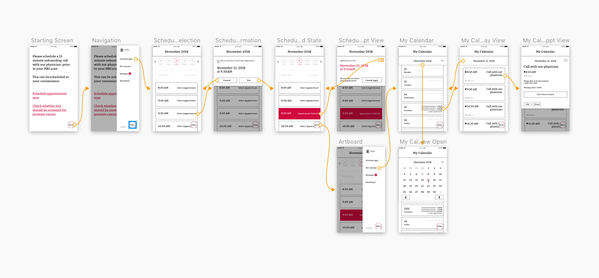

Brief
This was a redesign of a current on boarding flow for patients to book appointments to talk with a physician about the cancer screening process. This project was only focused on the interaction design and flow of the app.
Cancer screening is a terrifying experience and making sure that it is easy, clear, and accommodating is important to creating a great user experience. When designing healthcare applications, emotions of the user should be considered in the experience and accounted for in the design.
User Personas
There are 2 user groups that were kept in mind when designing for this application.
[insert user persona 1]
[insert user persona 2]
Race & Ethnicity is usually not included in Personas. But within healthcare, race is an important factor as it can affect what illnesses or diseases one is likely to get and different treatment options. So it is at least something to consider when designing and should be used to identify users for testing the designs.
These users also have not had any cancer before this screening.
Technology Gap
Most users who are in the 55+ age group are usually not as tech savvy as younger users. Based on data from the AARP, 7 in 10 adults over 50 own a smart phone.[1]
Only 18% of those over 50 are very confident that their data are kept private online with the exception that most are likely to trust banks and healthcare organizations.[1]
Only 24% of users over 40 are likely to use their smartphones to manage or receive medical care through their smartphones. Those numbers increase slightly with desktop use, with 32% willing to use their smartphones for managing or receiving medical care.[1]
Many older individuals do not use technology to perform tasks that deal with sensitive information. There is low trust and low usage. We want to gain trust with the user through our design and make sure our design is intuitive enough for this user group.
Emotional Design
Cancer screening is a scary process for anyone to undertake. Emotional state plays a vital role when dealing with serious health issues. So making sure the design of the application does not affect the users emotional state in a negative way is important.
With this screening a user is taking the first step into their Cancer journey. While most will not move on further in their journey than this screening, some will and being able to accommodate the needs of those who are in times of distress is important.
Starting Screen
The message on the screen is written in a manner that is asking permission from the user to complete the flow. This is different than the previous message which was written in a demanding tone.
The tone of the message is important and should always be on the side of asking or permission. This is a choice controlled by the user at this point to start a cancer screening. But if the outcome is not favorable the user will eventually have less and less control over their lives.
Any chance to give the user a choice, so they can have some semblance of control in this journey, should be given to them.
[insert image]
Navigation
The navigation is designed to be easily accessible for the user group. The use of icons is extremely limited in this design, as icons are not universal and can lead to confusion. Text is used to represent where the menu is located instead of any icon usage.
[insert menu image]
Scheduling Appointments
The prior design had separated the selection of the date and time. Users had to move back and forth through the date and time views to figure out what day and time worked for them. The layout in the prior design was text based and difficult for a user to create a mental model around the time and date.
The redesigned flow includes the time and date selection on the same screen. The user will most likely want to schedule this as soon as possible, the date selection is scrollable horizontally and only shows 5 dates at a time.
The time selection is scrollable vertically and shows all time slots. Missing gaps in time or dates are difficult to understand if they are missing on the screen.
[insert 4 images for flow of scheduling appt]
My Calendar
The previous design forced the user to save the calendar externally to another calendar app. The redesign allows user to manage their appointments within the app.
The calendar gives the users a timeline of their journey so they can keep their appointments organized separate from other obligations, if they so chose.
Allowing users to manage their appointments in a calendar separate from their personal or shared calendars is important to creating an experience that the user feels comfortable with.
Users may not want to share this sensitive information with others and giving them the control of when and who they want to share it with. This helps gain trust with the user that their privacy and information are secure.
Also, giving the users the ability to share appointments at their leisure helps the user to gain some feeling of control over their lives and their health.
The first screen the user is shown is the Month View. This shows the user an overview of the month. The days are laid out vertically and the month is shown in the title. The user can see all dates of the month not just the dates that have appointments.
[insert first calendar]
he user can switch months by swiping left or right or opening the month view and pressing the arrows.
[insert month view screen]
The user can click on the date from the month view and be taken to the Day view. This view shows all appointments arranged by time from earliest to latest. The Day view only shows the appointments.
[insert month view image]
If a user wants to view the appointment they can click on the appointment from the Day view and the information will dropdown in a modal view.
[insert Day view]
Conclusion
Digging deep into the research, understanding the illness and user group was the most enjoyable part of this project. Designing for users who are 50+ was an interesting challenge and is not really a user group that is the focus for most tech companies.
The interaction design of the app had to be easy to use for the target user group. Many interactions that are easy for most younger users may not be easy for an older population.
The next step of this project would be to test with the necessary user group.
[1] Technoloy Use and Attitudes among Mid-Life and Older Americans. AARP. https://www.aarp.org/content/dam/aarp/research/surveys_statistics/technology/info-2018/atom-nov-2017-tech-module.doi.10.26419%252Fres.00210.001.pdf